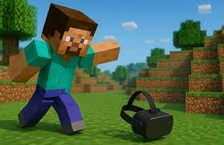
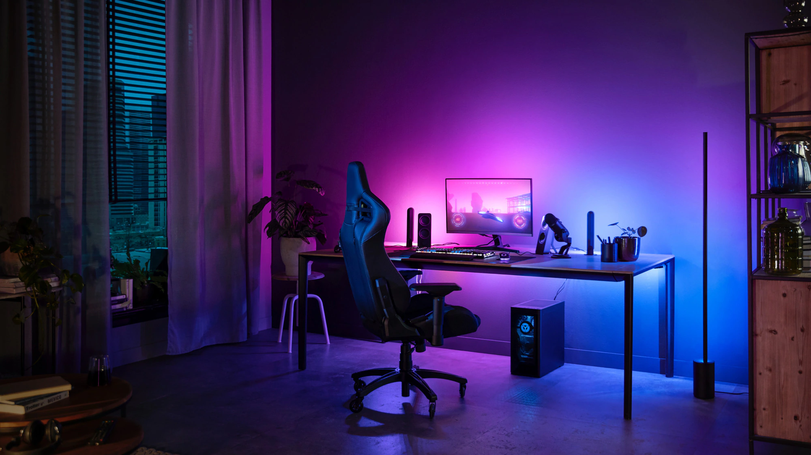
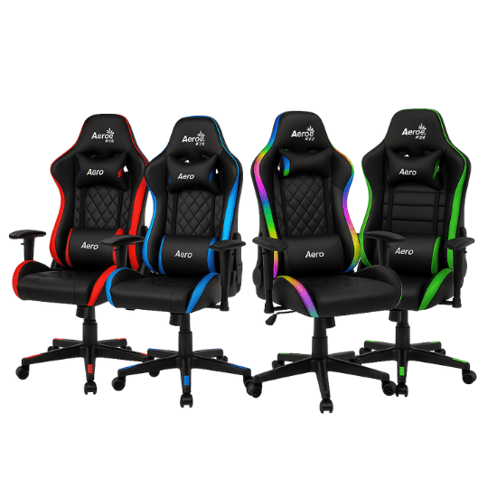

Comunidad LvL-UP
Quiénes somos
En LvL-UP Gamer creemos que el gaming es más que jugar: es comunidad, amistad y pasión. Nos unimos para compartir experiencias, aprender y crecer como gamers.
Ubicación: LvL Up Geek Store
Visítanos en Curicó y participa de eventos gamer donde podrás ganar puntos LvL-UP.
Impacto en la Comunidad
Con cada compra apoyas proyectos solidarios. Hemos donado +500 consolas a escuelas rurales y organizado talleres de programación para jóvenes.
Noticias Gamer
Torneo Nacional eSports 2025
¡Se vienen clasificatorias en todo Chile! Gana premios y puntos LvL-UP.

Nueva actualización: Minecraft VR
Explora mundos en realidad virtual con gráficos optimizados.
Game Jam Solidaria
Desarrolladores chilenos se unen para crear juegos con impacto social.

Tips para tu Setup Gamer
Iluminación LED para concentración
La iluminación correcta mejora el ambiente y reduce la fatiga visual.
Sillas ergonómicas = sesiones más largas
Invierte en postura y soporte lumbar para evitar molestias.
Optimiza tu internet con cableado LAN
El cable garantiza menor latencia y estabilidad frente al Wi-Fi.

Monitores con 144 Hz para fluidez total
Mayor tasa de refresco significa frames más suaves y mejor respuesta.